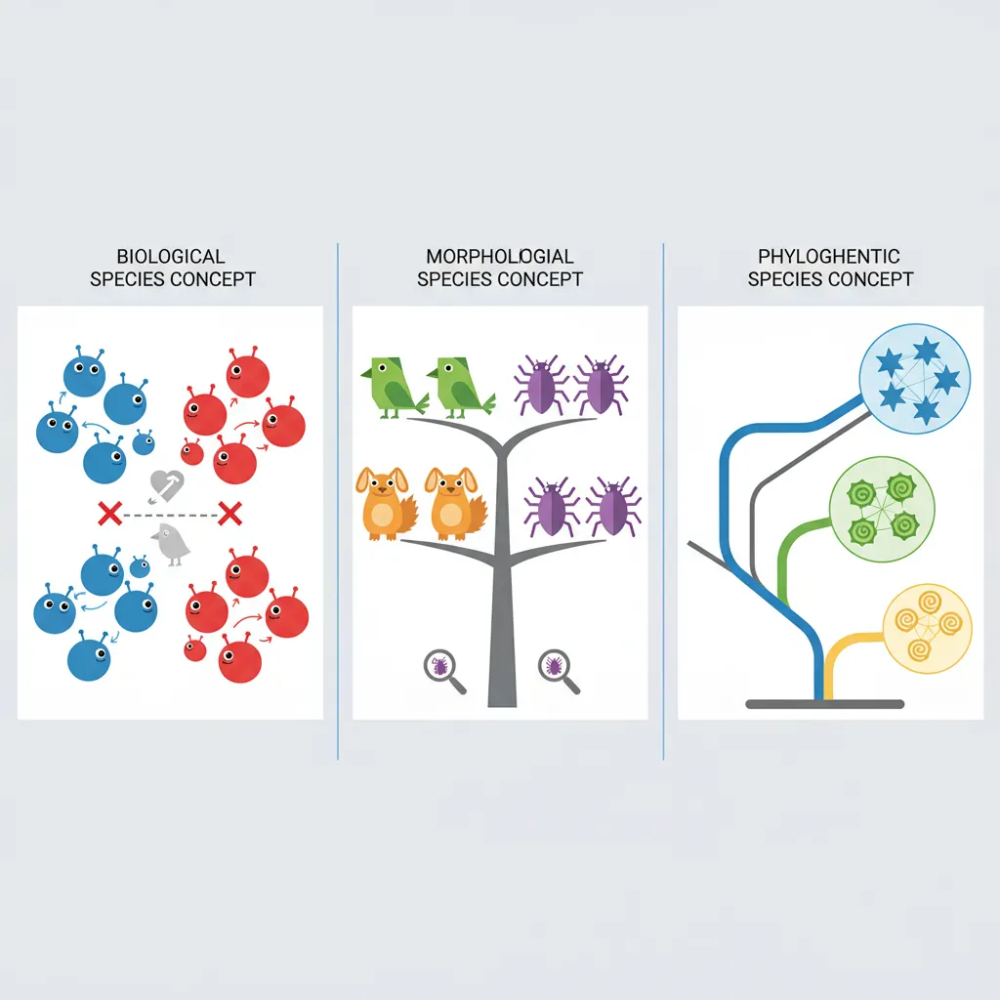
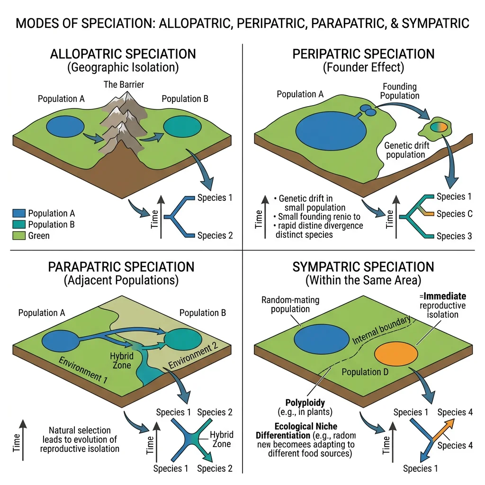
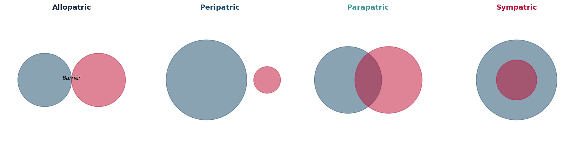
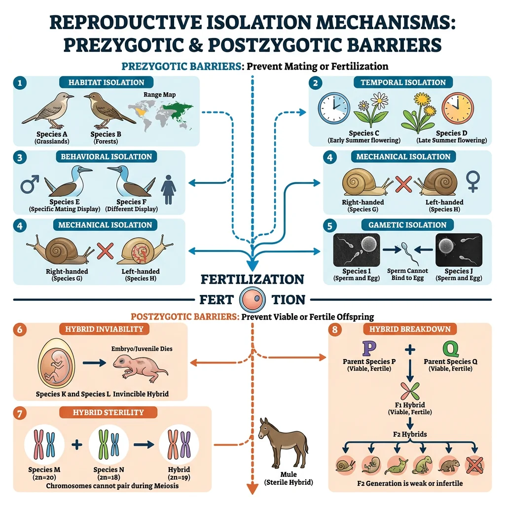
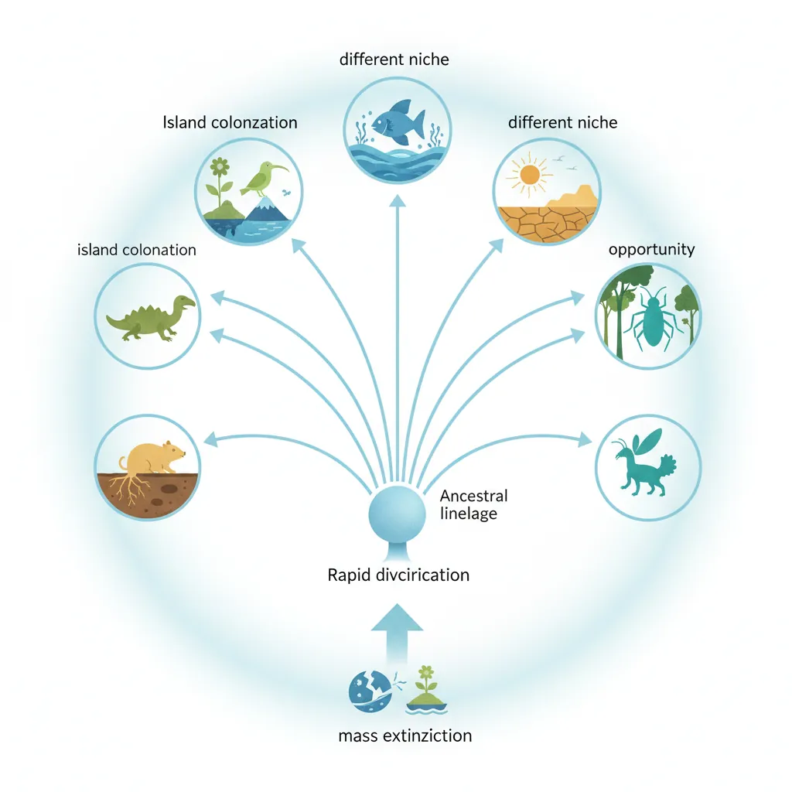
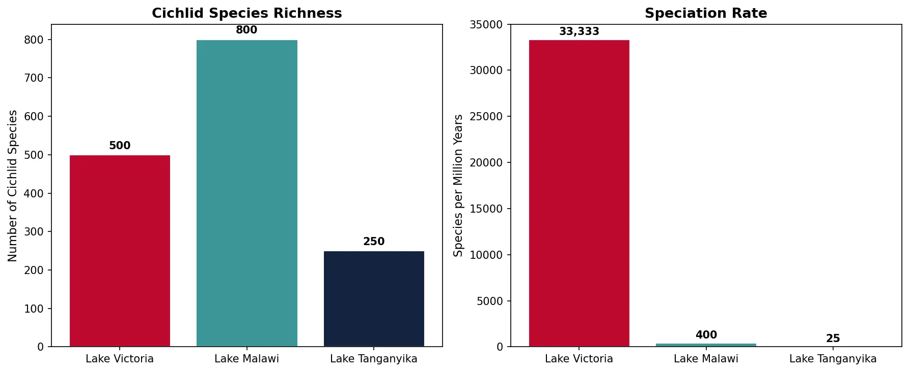
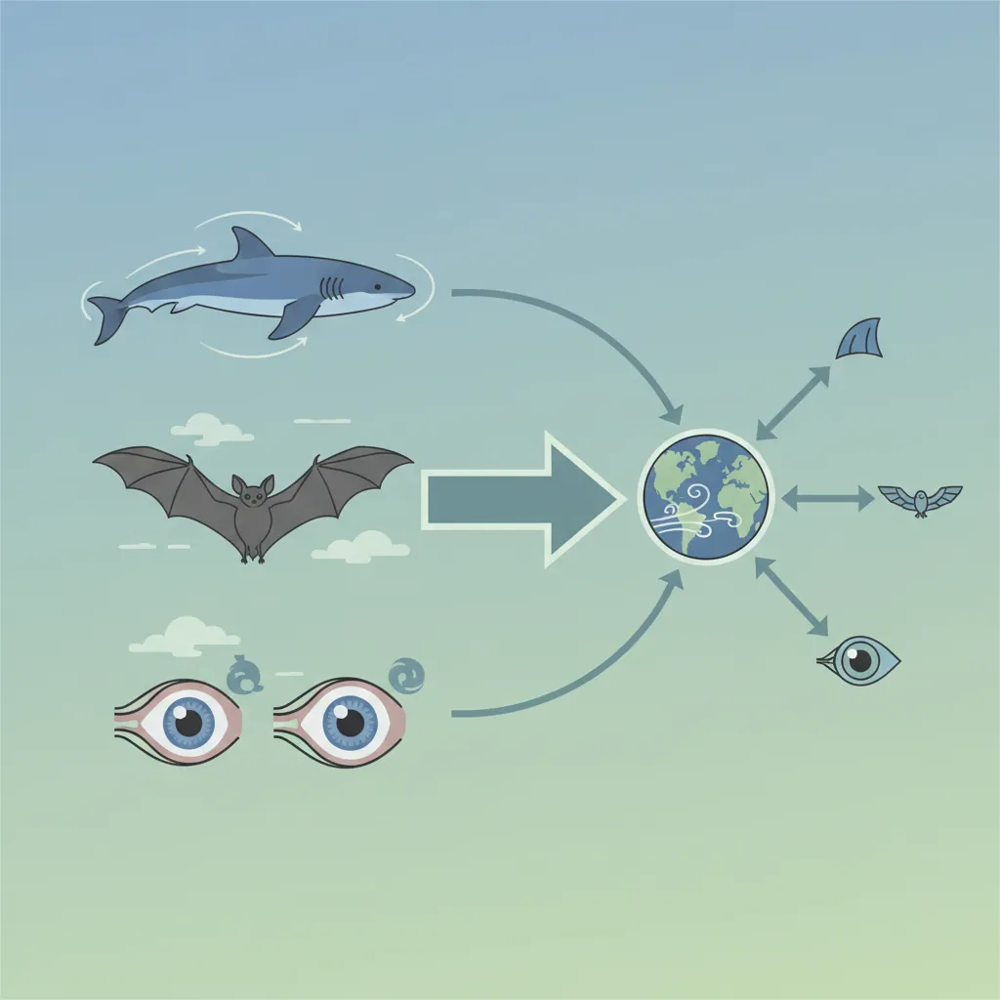

Evolutionary Biology Mastery
Darwin, Wallace & Natural Selection
Foundations, selection types, inclusive fitness, trade-offsGenetics of Evolution
DNA, population genetics, Hardy-Weinberg, molecular clocksSpeciation & Adaptive Radiation
Species concepts, reproductive isolation, rapid diversificationPhylogenetics & Taxonomy
Tree thinking, cladistics, molecular phylogenetics, classificationHuman Evolution & Migration
Hominin lineage, fossil evidence, Neanderthals, cultural evolutionCo-evolution & Symbiosis
Arms races, host-parasite, endosymbiosis, holobiontMass Extinctions & Biodiversity
Big Five extinctions, biodiversity patterns, conservationEvolutionary Developmental Biology
Hox genes, morphological innovation, heterochronyBehavioral & Social Evolution
Cooperation, game theory, sexual strategies, social insectsMathematical & Theoretical Evolution
Fitness landscapes, adaptive dynamics, ESS, selection modelsPaleontology & Fossil Interpretation
Radiometric dating, transitional fossils, taphonomyEvolutionary Genomics
Comparative genomics, gene duplication, HGT, epigeneticsWhat Defines a Species?
"What is a species?" seems like a simple question, yet biologists have debated it for over 200 years. The answer matters enormously — species are the fundamental units we count when measuring biodiversity, the units we protect with conservation laws, and the units whose origins we seek to explain. But nature doesn't always draw clean lines between groups, and different definitions highlight different aspects of the speciation process.

Biological Species Concept (BSC)
Proposed by Ernst Mayr in 1942, the Biological Species Concept defines species as groups of actually or potentially interbreeding natural populations that are reproductively isolated from other such groups. This is the most widely used concept because it directly links species identity to the mechanism of speciation — the evolution of reproductive barriers.
Limitations of BSC:
- Cannot apply to asexual organisms (bacteria, bdelloid rotifers)
- Cannot apply to fossils (we can't test interbreeding in extinct organisms)
- Hybridisation blurs boundaries — wolves, coyotes, and dogs interbreed but are considered separate species
- Allopatric populations can't be tested — we can only speculate about "potential" interbreeding
Morphological Species Concept
The Morphological Species Concept (also called the phenetic or typological concept) defines species by physical appearance — organisms that look sufficiently different are classified as different species. This is the oldest and most practical approach, used by Linnaeus and still the primary method for describing new species in taxonomic monographs.
Advantages: applicable to fossils, asexual organisms, and any life form. Disadvantages: subjective ("how different is different enough?"), fails for cryptic species (genetically distinct but morphologically identical), and misclassifies polymorphic species (different sexes or life stages look different).
The Neotropical Skipper Butterfly (Astraptes fulgerator)
What was considered a single species of skipper butterfly across Central America was revealed by DNA barcoding (2004) to be at least 10 different cryptic species. Caterpillars differed in coloration and host plant use, but adult butterflies were morphologically indistinguishable. This case demonstrated that morphological similarity can hide enormous genetic and ecological diversity.
Phylogenetic Species Concept (PSC)
The Phylogenetic Species Concept defines a species as the smallest group of organisms that shares a common ancestor and can be diagnosed by unique traits (synapomorphies). In practice, this often means any population with a distinct DNA sequence lineage qualifies as a separate species.
The PSC has gained enormous popularity with the rise of molecular phylogenetics. It avoids the "interbreeding test" problem and works for any organism (sexual, asexual, extinct). However, it tends to split populations into many more species than the BSC would recognise — sometimes called "taxonomic inflation." What the BSC would call a subspecies, the PSC might elevate to full species status.
| Species Concept | Criterion | Strengths | Weaknesses |
|---|---|---|---|
| Biological (BSC) | Reproductive isolation | Directly linked to speciation mechanism | Fails for asexuals, fossils, allopatric populations |
| Morphological | Physical appearance | Universal applicability, practical for fieldwork | Subjective, misses cryptic species |
| Phylogenetic (PSC) | Monophyletic lineage | Works for all organisms, objective with molecular data | Taxonomic inflation, gene tree vs species tree conflicts |
| Ecological | Unique ecological niche | Emphasises adaptive significance | Difficult to define niche boundaries |
Modes of Speciation
Speciation — the splitting of one species into two or more — is the engine of biodiversity. How populations become reproductively isolated depends largely on geography. The four modes are classified by the spatial relationship between diverging populations.

Allopatric Speciation
Allopatric speciation (from Greek allos = other, patris = fatherland) occurs when a population is physically divided by a geographic barrier — a mountain range, river, ocean, or glacier. Once gene flow is severed, the isolated populations diverge through natural selection and genetic drift until they can no longer interbreed even if reunited.
Snapping Shrimp and the Rise of Central America
About 3 million years ago, the Isthmus of Panama rose from the sea, dividing the Atlantic and Pacific oceans. Populations of snapping shrimp (Alpheus) that had been a single species were split into Caribbean and Pacific populations. Nancy Knowlton showed that 15 pairs of "sister species" had formed — one on each side of the isthmus. Pairs that diverged earlier show more genetic difference and complete reproductive isolation, while more recently separated pairs can still hybridise weakly. This provides a natural "experiment" showing speciation as a gradual process.
Peripatric Speciation
Peripatric speciation is a special case of allopatric speciation where a small peripheral population becomes isolated at the edge of the species range. The small population size amplifies the effects of genetic drift (including the founder effect), leading to rapid genetic divergence. Mayr called this the "founder effect speciation" or "genetic revolution."
Island colonisation is the classic peripatric scenario — a few individuals blown to a remote island carry only a fraction of the mainland gene pool. If they survive and establish a population, genetic drift and selection in the new environment can drive rapid divergence.
Parapatric Speciation
Parapatric speciation occurs when populations diverge along an environmental gradient without a sharp geographic barrier. The populations are adjacent and may exchange some migrants, but strong selection in different environments can overcome gene flow and drive divergence.
A well-studied example is the grass species Anthoxanthum odoratum growing near mines in Wales. Populations on heavy-metal-contaminated soil evolved metal tolerance within a few hundred years. The tolerant and non-tolerant populations grow adjacent to each other but flower at slightly different times, reducing gene flow and initiating reproductive isolation.
Sympatric Speciation
Sympatric speciation occurs when new species arise within the same geographic area, without any physical barrier to gene flow. This is the most controversial mode because it requires speciation despite ongoing gene exchange. Theoretical models show it can occur through disruptive selection, assortative mating, or polyploidy.
Cichlids of Lake Barombi Mbo, Cameroon
Lake Barombi Mbo is a tiny volcanic crater lake (2.5 km²) in Cameroon with 11 endemic cichlid species. The lake has no geographic barriers, is too small for allopatric separation, and was formed within the last million years. Molecular phylogenetics showed all 11 species form a monophyletic group — they descended from a single colonising ancestor and speciated within the lake. This is one of the most compelling cases for sympatric speciation in nature.
import numpy as np
import matplotlib.pyplot as plt
# Visualise speciation modes — geographic overlap
fig, axes = plt.subplots(1, 4, figsize=(14, 3.5))
modes = ['Allopatric', 'Peripatric', 'Parapatric', 'Sympatric']
colours = ['#132440', '#16476A', '#3B9797', '#BF092F']
for ax, mode, colour in zip(axes, modes, colours):
ax.set_xlim(0, 10)
ax.set_ylim(0, 10)
ax.set_aspect('equal')
ax.set_title(mode, fontsize=12, fontweight='bold', color=colour)
ax.axis('off')
# Allopatric — two separated circles
c1 = plt.Circle((3, 5), 2, color='#16476A', alpha=0.5)
c2 = plt.Circle((7, 5), 2, color='#BF092F', alpha=0.5)
axes[0].add_patch(c1); axes[0].add_patch(c2)
axes[0].annotate('Barrier', xy=(5, 5), fontsize=9, ha='center', fontstyle='italic')
# Peripatric — large + small circles
c1 = plt.Circle((4, 5), 3, color='#16476A', alpha=0.5)
c2 = plt.Circle((8.5, 5), 1, color='#BF092F', alpha=0.5)
axes[1].add_patch(c1); axes[1].add_patch(c2)
# Parapatric — adjacent with slight overlap
c1 = plt.Circle((3.5, 5), 2.5, color='#16476A', alpha=0.5)
c2 = plt.Circle((6.5, 5), 2.5, color='#BF092F', alpha=0.5)
axes[2].add_patch(c1); axes[2].add_patch(c2)
# Sympatric — nested circles
c1 = plt.Circle((5, 5), 3, color='#16476A', alpha=0.5)
c2 = plt.Circle((5, 5), 1.5, color='#BF092F', alpha=0.5)
axes[3].add_patch(c1); axes[3].add_patch(c2)
plt.tight_layout()
plt.show()

Adaptive Speciation
The four geographic modes above describe where diverging populations are relative to each other. Adaptive speciation (also called ecological speciation) addresses a different question: why do populations diverge? The answer is divergent natural selection. When two populations experience different ecological environments — different food resources, predators, climates, or habitats — natural selection pushes them in different directions. Reproductive isolation then evolves as a by-product of that adaptive divergence, rather than by genetic drift or random mutation alone.
This is a crucial distinction. In the traditional geographic framework, isolation comes first (a river forms, an island is colonised) and divergence follows. In adaptive speciation, selection itself drives the split — even when gene flow has not been fully severed. This means adaptive speciation can operate across all geographic settings: allopatric, parapatric, and most dramatically, sympatric.
Ecological Speciation
Ecological speciation is the most studied form of adaptive speciation. It occurs when reproductive isolation evolves between populations as a consequence of ecologically-based divergent selection. The key condition is that the traits under divergent selection — or traits genetically correlated with them — also cause assortative mating.
Three forms of divergent selection can drive ecological speciation:
- Adaptation to different environments — populations in distinct habitats (e.g., rocky vs sandy lake bottoms) evolve different morphologies and come to prefer mates from their own habitat
- Ecological character displacement — competition for shared resources drives phenotypic divergence between co-occurring species, reducing hybridisation
- Predator-mediated selection — different predator regimes in different environments select for divergent traits (colour, behaviour, habitat use) that also affect mate choice
Threespine Stickleback Fish — Benthic vs Limnetic
In several post-glacial lakes in British Columbia, threespine stickleback (Gasterosteus aculeatus) have independently evolved two distinct forms: benthic (bottom-dwelling, deep-bodied, wide-gaped, feeding on invertebrates in sediment) and limnetic (open-water, slender, narrow-gaped, feeding on plankton). These forms coexist in the same lake — no geographic barrier separates them — yet they rarely interbreed. Body shape directly affects feeding efficiency in each habitat, and mate choice is strongly size-assortative. Females prefer males of their own ecotype, linking the ecological trait (body form) to reproductive isolation. This is textbook adaptive speciation — the same ecological divergence has occurred independently in multiple lakes.
Magic Traits & Sensory Drive
One of the biggest challenges for adaptive speciation is explaining how ecological divergence becomes linked to mate choice. If the genes controlling feeding morphology are completely separate from the genes controlling mate preference, divergent selection on feeding alone will not produce reproductive isolation — gene flow will homogenise the mating genes.
Two elegant solutions have been proposed:
- Magic traits — traits that are simultaneously under divergent natural selection and used as mating cues. Body size in sticklebacks is a magic trait: it determines feeding efficiency (ecology) and is also the basis of female mate preference. When the same trait does "double duty," ecological divergence automatically generates reproductive isolation — hence the name "magic."
- Sensory drive — the idea that the signalling environment (light spectrum, sound transmission, visual background) shapes both signal evolution and receiver preferences. In African cichlids, water clarity varies across lake depths. Blue light penetrates deep water, while red-orange dominates shallow water. Fish in deep water evolve blue coloration and visual pigments sensitive to blue, while shallow-water fish evolve red coloration and red-sensitive vision. Mate choice follows sensory adaptation — each population prefers mates whose colours are most visible in their environment. Ole Seehausen demonstrated that when you illuminate cichlids with monochromatic light (eliminating colour differences), species recognition breaks down and hybridisation increases dramatically.
Reinforcement
Reinforcement (also called the Wallace effect) is the process by which natural selection strengthens prezygotic isolation between populations that have already diverged to some degree. When hybrids between two populations have reduced fitness (postzygotic isolation is partial), selection favours individuals who avoid mating with the other population. Over time, mating preferences become stronger, completing the speciation process.
Reinforcement is sometimes described as "speciation completing itself" — it turns partial reproductive isolation into complete isolation. It is particularly important in parapatric and sympatric settings where gene flow would otherwise erode divergence.
Drosophila Reinforcement Studies
Jerry Coyne and Allen Orr compared prezygotic isolation levels across hundreds of Drosophila species pairs. They found that sympatric species pairs (those whose ranges overlap) showed significantly stronger prezygotic isolation than allopatric pairs of the same genetic distance. This "pattern of reinforcement" is exactly what theory predicts — where species can potentially hybridise (sympatry), selection has strengthened mating barriers beyond what divergence alone would produce. Allopatric pairs, which never encounter each other, show no such enhancement.
Mutation-Order Speciation vs Adaptive Speciation
To fully appreciate what makes adaptive speciation distinctive, it helps to contrast it with mutation-order speciation. In mutation-order speciation, two isolated populations face the same selection pressure but fix different mutations to solve the same problem. For example, both populations may be adapting to cold, but one evolves thicker fur via Gene A while the other evolves thicker fur via Gene B. When reunited, the two populations are genetically incompatible (Dobzhansky-Muller incompatibilities) even though they adapted to the same environment.
| Feature | Adaptive (Ecological) Speciation | Mutation-Order Speciation |
|---|---|---|
| Selection | Divergent — different environments favour different traits | Uniform — same environment, same selection pressures |
| Source of divergence | Ecological differences between populations | Different random mutations fixed in each population |
| Gene flow tolerance | Can proceed despite moderate gene flow | Requires strong isolation (gene flow homogenises) |
| Reproductive isolation | By-product of ecological adaptation | Dobzhansky-Muller incompatibilities |
| Predictability | Repeatable — same ecology produces similar divergence (parallel speciation) | Unpredictable — depends on which mutations happen to arise |
| Classic example | Stickleback benthic/limnetic pairs | Drosophila incompatibilities in allopatry |
Reproductive Isolation
For speciation to be complete, populations must develop reproductive isolation — biological differences that prevent gene exchange. These barriers are classified by whether they act before fertilisation (prezygotic) or after fertilisation (postzygotic).

Prezygotic Barriers
Prezygotic barriers prevent the formation of hybrid zygotes. They are more "efficient" than postzygotic barriers because no resources are wasted on inviable offspring.
| Barrier Type | Mechanism | Example |
|---|---|---|
| Habitat isolation | Species occupy different habitats in same area | Parasitic Rhagoletis flies: apple vs hawthorn host races |
| Temporal isolation | Breed at different times (seasons, times of day) | Eastern and western spotted skunks breed fall vs spring |
| Behavioural isolation | Different mating signals (songs, dances, pheromones) | Firefly species have unique flash patterns |
| Mechanical isolation | Incompatible reproductive structures | Sage species with different floral morphologies for different pollinators |
| Gametic isolation | Sperm and egg fail to fuse | Sea urchin species with incompatible bindin proteins |
Postzygotic Barriers
When prezygotic barriers fail and a hybrid zygote forms, postzygotic barriers reduce the fitness of hybrids, limiting gene flow between species.
- Hybrid inviability — hybrid embryo develops abnormally or dies before reproduction (e.g., sheep × goat hybrids rarely survive)
- Hybrid sterility — hybrid is viable but infertile because chromosomes can't pair properly during meiosis (e.g., mule = horse × donkey; 64 + 62 = 63 chromosomes → can't form balanced gametes)
- Hybrid breakdown — first-generation hybrids are viable and fertile, but subsequent generations have reduced fitness (e.g., some rice cultivar crosses)
Hybrid Zones
A hybrid zone is a geographic region where two divergent populations meet, mate, and produce offspring of mixed ancestry. Hybrid zones are natural laboratories for studying speciation in action.
Three outcomes are possible for hybrid zones over time:
- Reinforcement — prezygotic barriers strengthen and the zone narrows → two distinct species
- Fusion — hybrids are equally fit and gene flow erases differences → populations merge back into one species
- Stability — the hybrid zone persists indefinitely, maintained by a balance of selection against hybrids and ongoing dispersal into the zone
European Carrion and Hooded Crow Hybrid Zone
The carrion crow (all black) and hooded crow (grey body, black head/wings) meet in a narrow hybrid zone across central Europe. Despite appearing dramatically different, they are genetically nearly identical — differing at only a handful of loci related to plumage colour. The hybrid zone has been stable for thousands of years. Recent genomic studies (Poelstra et al., 2014) revealed that the "speciation genes" are concentrated in a single genomic region, demonstrating that even a small number of genes can maintain species boundaries.
Adaptive Radiation
Adaptive radiation is the rapid diversification of a single ancestral lineage into many ecologically diverse species, each adapted to a different niche. It is evolution in fast-forward — producing spectacular diversity in remarkably short periods. The concept was first articulated by George Gaylord Simpson in his 1953 book The Major Features of Evolution.

Ecological Niches & Ecological Opportunity
Adaptive radiation is triggered by ecological opportunity — the availability of unoccupied or underexploited niches. This opportunity arises from:
- Colonisation of a new habitat — e.g., Hawaiian islands, crater lakes
- Mass extinction — clearing of incumbents opens niches (mammals after dinosaur extinction)
- Key innovation — a new trait that allows access to previously unavailable resources (e.g., wings enabling flight)
- Elimination of competitors — ecological release when a dominant group disappears
Island Evolution
Islands are the greatest natural laboratories for studying adaptive radiation. Their isolation, small size, and limited competitors create ideal conditions for diversification.
Darwin's Finches of the Galápagos
A single ancestral finch species colonised the Galápagos Islands approximately 2–3 million years ago and radiated into 14 species with dramatically different beak shapes and sizes, each adapted to a specific food source. Ground finches crack seeds (large, deep beaks), cactus finches probe cactus flowers (long, pointed beaks), warbler finches catch insects (thin, delicate beaks), and the famous woodpecker finch uses twigs as tools to extract larvae from bark. The Grants' 40+ year field study documented natural selection in real time — during the 1977 drought, only finches with larger beaks survived because only large, hard seeds remained.
Other spectacular island radiations include:
- Hawaiian honeycreepers — ~56 species from a single finch-like ancestor, with beaks ranging from parrot-like seed crackers to long, curved nectar sippers
- Hawaiian silverswords — 30+ plant species sharing a single ancestor, ranging from cushion plants on alpine lava to tall trees in rainforests
- Anolis lizards of the Caribbean — convergent evolution of ecomorphs (trunk, twig, canopy specialists) independently on each island
Rapid Diversification
Some of the most dramatic radiations have occurred in lakes. African cichlid fishes are the poster child for explosive speciation — Lake Victoria alone contains 500+ cichlid species that evolved in less than 15,000 years. Lake Malawi has over 800 species, and Lake Tanganyika approximately 250 species. In Lake Victoria, speciation rates reach one new species every 200 years on average — among the fastest in any vertebrate.
import numpy as np
import matplotlib.pyplot as plt
# Adaptive radiation: species richness in African Great Lakes
lakes = ['Lake Victoria', 'Lake Malawi', 'Lake Tanganyika']
species = [500, 800, 250]
ages_mya = [0.015, 2.0, 10.0] # approximate lake ages in millions of years
rate = [sp / age for sp, age in zip(species, ages_mya)]
fig, (ax1, ax2) = plt.subplots(1, 2, figsize=(12, 5))
# Species count
bars = ax1.bar(lakes, species, color=['#BF092F', '#3B9797', '#132440'], edgecolor='white')
ax1.set_ylabel('Number of Cichlid Species', fontsize=11)
ax1.set_title('Cichlid Species Richness', fontsize=13, fontweight='bold')
for bar, sp in zip(bars, species):
ax1.text(bar.get_x() + bar.get_width()/2, bar.get_height() + 15, str(sp),
ha='center', fontweight='bold')
# Speciation rate (species per million years)
bars2 = ax2.bar(lakes, rate, color=['#BF092F', '#3B9797', '#132440'], edgecolor='white')
ax2.set_ylabel('Species per Million Years', fontsize=11)
ax2.set_title('Speciation Rate', fontsize=13, fontweight='bold')
for bar, r in zip(bars2, rate):
ax2.text(bar.get_x() + bar.get_width()/2, bar.get_height() + 500,
f'{r:,.0f}', ha='center', fontweight='bold')
plt.tight_layout()
plt.show()

Macroevolutionary Patterns
Macroevolution refers to evolution above the species level — the grand patterns of diversification, morphological innovation, and lineage extinction that unfold over millions of years. While the mechanisms of macroevolution are debated (some argue it is microevolution accumulated, others invoke additional processes), certain patterns recur throughout the history of life.

Convergent Evolution
Convergent evolution occurs when unrelated organisms independently evolve similar traits in response to similar environmental challenges. The similarities arise not from shared ancestry but from shared selection pressures — a powerful testament to the predictability of natural selection.
| Trait | Example 1 | Example 2 | Shared Challenge |
|---|---|---|---|
| Streamlined body | Dolphins (mammals) | Sharks (cartilaginous fish) | Efficient aquatic locomotion |
| Wings | Bats (mammals) | Birds (dinosaurs) | Powered flight |
| Camera eye | Vertebrates | Octopuses (molluscs) | Image-forming vision |
| Echolocation | Bats | Dolphins | Navigation in darkness |
| C4 photosynthesis | Maize (grass) | Sugarcane (grass) | Hot, dry environments |
Parallel Evolution
Parallel evolution is similar to convergence but involves closely related lineages evolving the same trait independently. The distinction from convergence is sometimes blurry, but the key idea is that related organisms share genetic architecture that channels evolution along similar paths.
Anolis Lizard Ecomorphs in the Caribbean
On each of the four Greater Antillean islands (Cuba, Hispaniola, Jamaica, Puerto Rico), Anolis lizards independently evolved the same set of ecomorphs — trunk-ground specialists (stocky with long legs), twig specialists (slender with short legs), trunk-crown dwellers (intermediate), and canopy giants. Molecular phylogenetics confirmed that these are not shared from a common ancestor — they evolved convergently on each island. This represents one of the most striking examples of repeatable evolution.
Evolutionary Constraints
Not all traits can evolve freely. Evolutionary constraints limit the direction and rate of evolution:
- Phylogenetic constraints — body plans are inherited and difficult to fundamentally reorganise. All vertebrates have at most four limbs because the tetrapod ancestor had four; no vertebrate has evolved six
- Developmental constraints — the mechanisms of embryonic development channel variation. For example, the number of digits can vary, but the basic limb pattern (stylopod → zeugopod → autopod) is deeply conserved
- Genetic constraints — pleiotropy (one gene affecting multiple traits) means a beneficial change in one trait may come at a cost in another
- Physical constraints — physics and engineering principles limit biological design. Insects cannot grow as large as elephants because their tracheal breathing system cannot supply oxygen to a body that large
Exercises & Review
Exercise 1: Speciation Mode Identification
For each scenario, identify the mode of speciation (allopatric, peripatric, parapatric, or sympatric):
- A river changes course and splits a frog population into two groups.
- A few finches are blown to a remote island during a storm.
- A plant species produces polyploid offspring that can only mate with other polyploids.
- Two populations of mice living on different sides of an elevation gradient diverge.
Show Answers
- Allopatric — geographic barrier (river) splits population
- Peripatric — small peripheral population colonises new area (founder effect)
- Sympatric — polyploidy creates instant reproductive isolation within same population
- Parapatric — divergence along environmental gradient without complete barrier
Exercise 2: Prezygotic vs Postzygotic
Classify each barrier as prezygotic or postzygotic:
- Two frog species breed in different seasons.
- Horse × donkey produces a sterile mule.
- Male birds of one species cannot recognise the song of another species' female.
- Hybrid plants produce seeds that fail to germinate.
Show Answers
- Prezygotic — temporal isolation (different breeding seasons)
- Postzygotic — hybrid sterility (mule cannot reproduce)
- Prezygotic — behavioural isolation (unrecognised mating signals)
- Postzygotic — hybrid breakdown (F2 generation inviability)
Exercise 3: Convergent or Homologous?
Determine whether each pair represents convergent evolution (analogous structures) or shared ancestry (homologous structures):
- Bat wing and human arm
- Bat wing and insect wing
- Dolphin flipper and fish fin
- Cat leg and dog leg
Show Answers
- Homologous — both are modified tetrapod forelimbs (same bones: humerus, radius, ulna)
- Convergent (analogous) — independently evolved for flight; completely different structures
- Convergent (analogous) — streamlined appendages evolved independently for swimming
- Homologous — both inherited from a common mammalian ancestor
Downloadable Worksheet
Speciation & Adaptive Radiation Worksheet
Document speciation events, reproductive isolation mechanisms, and adaptive radiation patterns. Download as Word, Excel, or PDF.
Conclusion & Next Steps
Speciation is the process that transforms microevolutionary change within populations into macroevolutionary diversity across the tree of life. We've seen how geographic isolation (allopatric speciation), environmental gradients (parapatric), and even within-population processes (sympatric) can drive reproductive isolation. Adaptive radiation then explains how a single lineage can explosively diversify when ecological opportunity meets evolutionary potential.